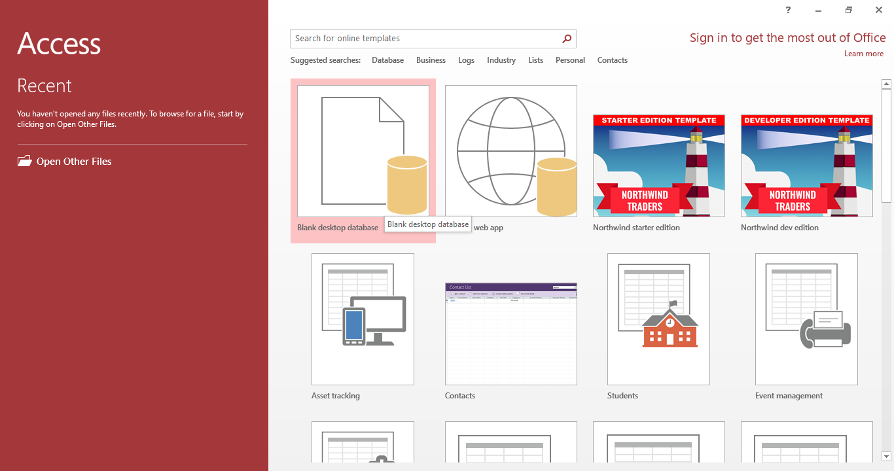
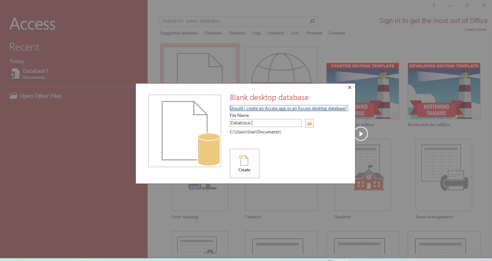
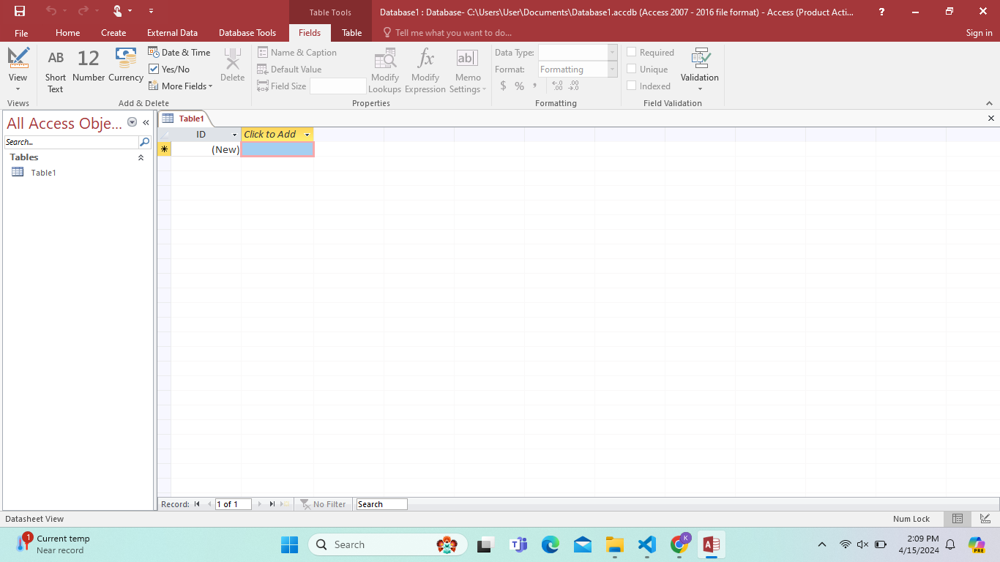
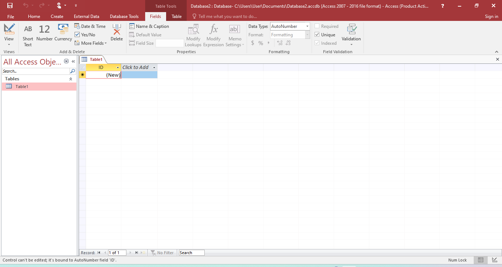
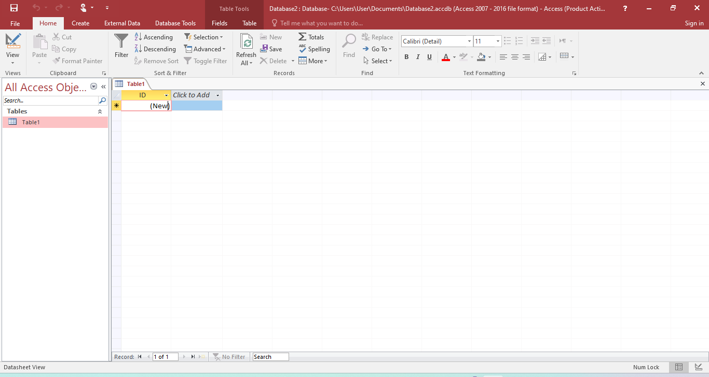
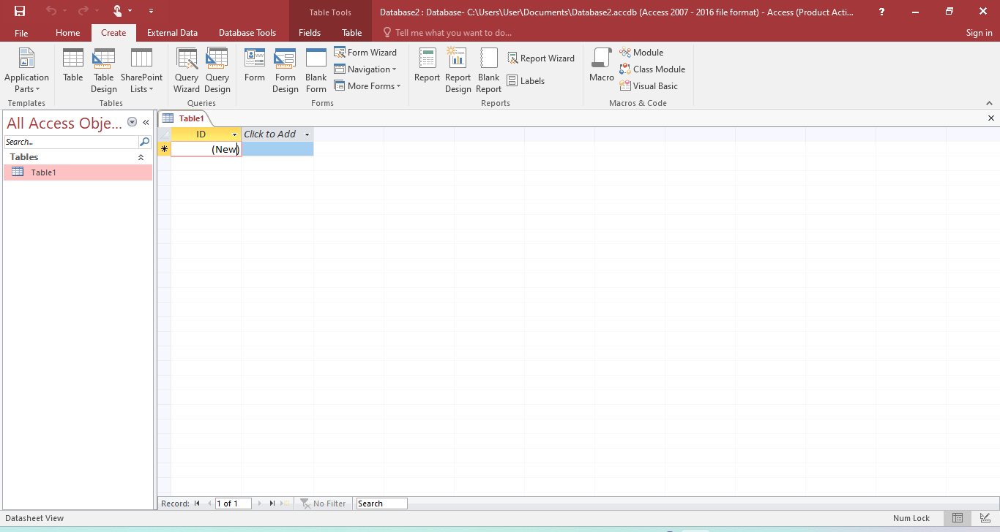

Learn Microsoft Access 2016
Microsoft Access is a database management system (DBMS) from Microsoft that combines the relational Microsoft Jet Database Engine with a graphical user interface and software-development tools. It is a member of the Microsoft Office suite of applications, included in the professional and higher editions. In this section, you will find resources to help you learn Microsoft Access 2016.
Step 1: Open Microsoft Access 2016 and select blank desktop database


Step 2: Select folder, change file name and click create
Step 3: Click view in fiealds tab and click design view then save table name and create table headings and data types


Step 4: In this home tab, you can adjust font, align, sort, borders, filter etc
Step 5: You can create tables, Query, Forms, Reports using the options in create tab


Step 6: Can design the word document using design tab (add water mark, page color, page border etc )